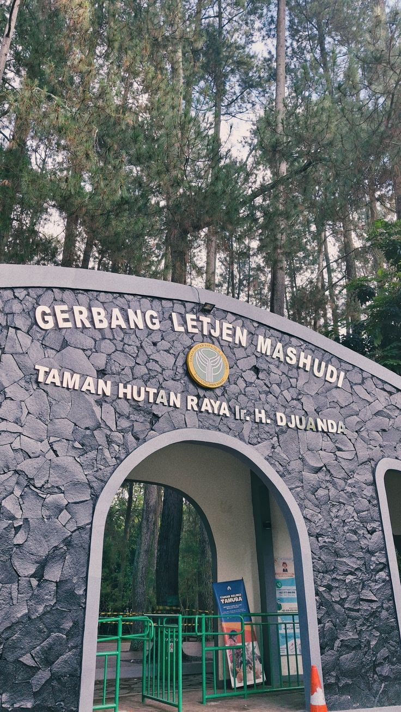
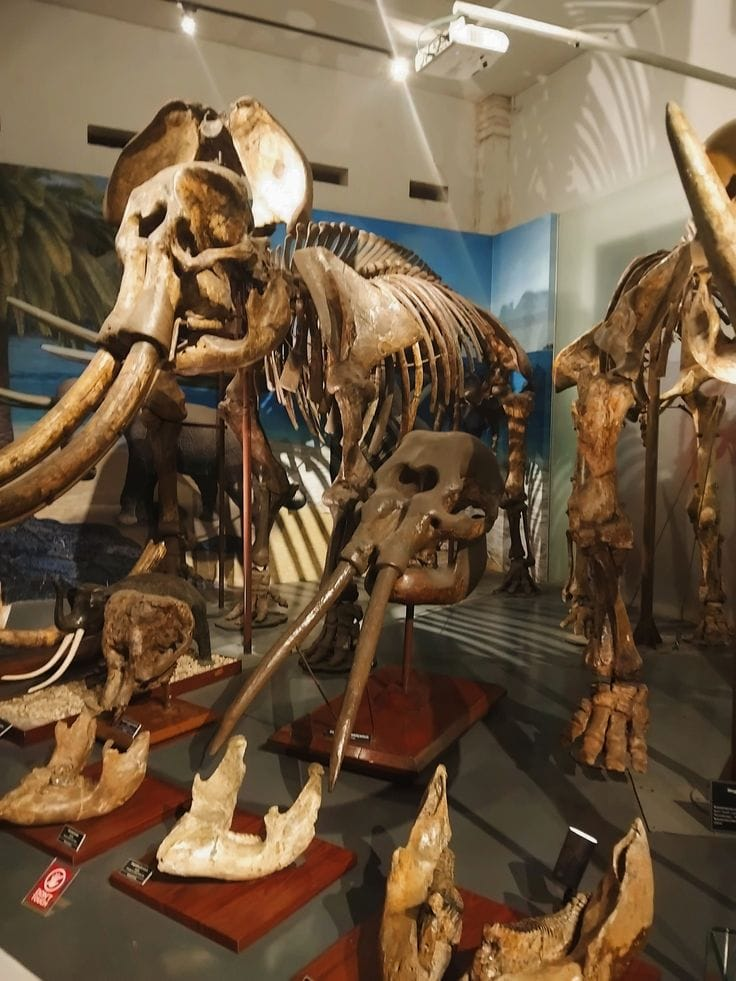
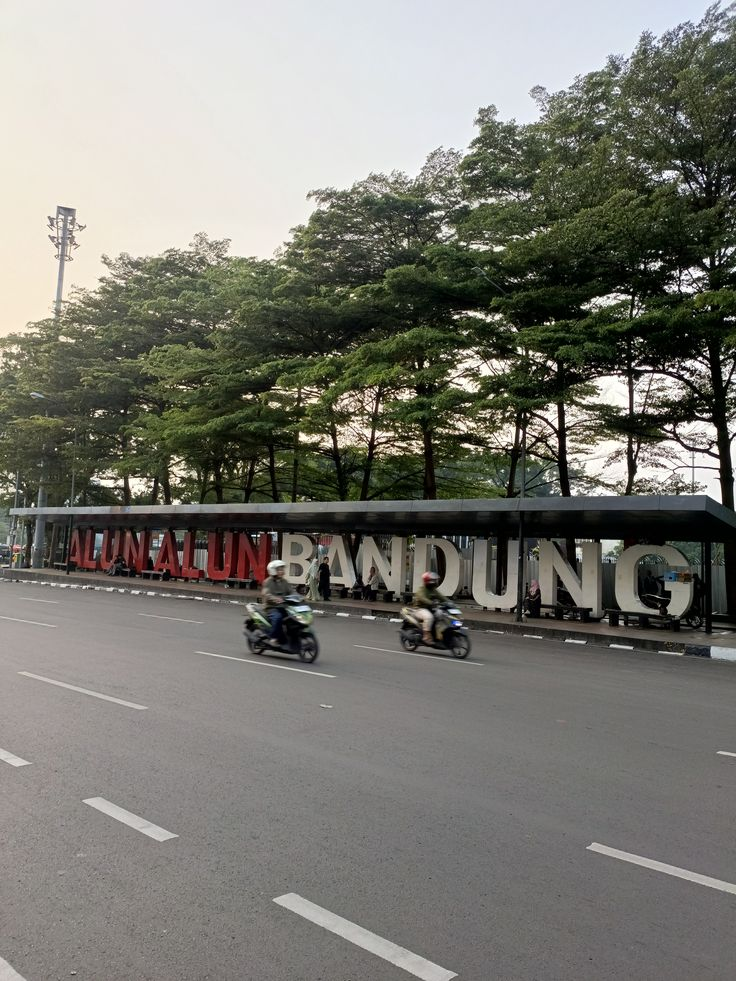

Jelajahi Kota Kembang dengan penuh kenangan yang terus terulang.
Cek lokasi Kota Kembang di bawah ini untuk memulai petualanganmu.
Temukan pengalaman berlibur yang sesuai dengan minatmu di Kota Bandung.

Jelajahi keindahan gunung, kebun teh yang hijau, dan udara yang masih segar di sini.
Jelajahi
Pelajari sejarah kota Bandung dan nikmati kekayaan budaya lokal yang unik.
Jelajahi
Kunjungi berbagai objek wisata modern, taman bermain, dan sentra belanja ternama.
Jelajahi